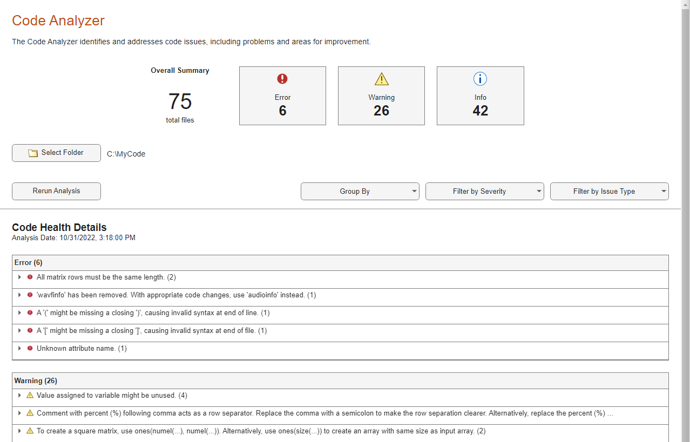
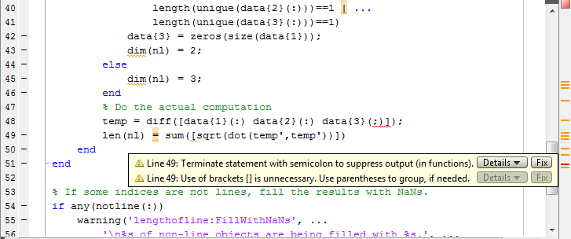

MATLAB Code Analyzer Report
Open the Code Analyzer Report
The Code Analyzer Report displays potential errors and problems, as well as opportunities for improvement in your code through messages. Interactively browse the report using the Code Analyzer app, which can be opened in the following ways.
MATLAB® Toolstrip: On the Apps tab, under MATLAB, click the app icon:
 .
.MATLAB command prompt: Enter
codeAnalyzer.
A list of all checks performed by the MATLAB Code Analyzer can be found here, Index of Code Analyzer Checks.
Run the Code Analyzer Report
Use the Code Analyzer app to analyze the code in a specified file or folder.
Run the Code Analyzer on the desired file or folder.
codeAnalyzer("C:\MyCode")This command launches the Code Analyzer app and generates a report of the issues found within the specified code. The summary section at the top of the report provides an overview of the information contained in the report. This section shows how many files were analyzed and the total number of errors, warnings, and informational messages found in the analyzed code.

Issues are grouped by severity by default. You can change how issues are grouped by using the Group By list. Group the report by file.

You can filter the displayed messages by using the Filter by Severity and Filter by Issue Type lists. Filter the report to show only errors.

Some issues can be solved with automated replacement. These issues have a Fix All button. If you expand the issue by clicking on it, individual instances of the issues can be fixed clicking the corresponding Fix button. Hover the cursor over the Fix or Fix All buttons to see what fix MATLAB will implement.

Change Code Based on Code Analyzer Messages
For information on how to correct the potential problems presented in Code Analyzer messages, use the following resources:
Open the file in the Editor and click the Details button in the tooltip, as shown in the image following this list. An extended message opens. However, not all messages have extended messages.
Search the MathWorks® documentation about terms presented in the messages.
The following image shows a tooltip with a Details button.
The orange line under the equals (=) sign
indicates a tooltip displays if you hover over the equals sign. The orange
highlighting indicates that an automatic fix is
available.

In R2023a: Issues that have an automatic fix
available can be fixed programmatically using the fix
function on a codeIssues object. These issues can also be fixed interactively
using the Code
Analyzer app.
Other Ways to Access Code Analyzer Messages
You can get Code Analyzer messages using any of the following methods. Each provides the same messages, but in a different format:
For an index of all Code Analyzer messages, see Index of Code Analyzer Checks.
Access the Code Analyzer Report for a file using the Code Analyzer app.
Run the
codeIssuesfunction, which analyzes the specified file and displays messages in the Command Window.Use automatic code checking while you work on a file in the Editor. For more information, see Check Code for Errors and Warnings Using the Code Analyzer.
Configure Code Analyzer Messages
Since R2023a
You can configure existing checks displayed by the code analyzer and add custom
checks by placing a file named codeAnalyzerConfiguration.json
inside a resources folder. This file configures the code analyzer
checks performed for the resources folder's parent folder and its
subfolders.
For more information, see Configure Code Analyzer.
See Also
Code
Analyzer | codeIssues | checkcode